Age and sex distributions (children’s data)
Age heaping is the tendency to report children’s ages to the nearest year or adult ages to the nearest multiple of 5 or 10 years. Age heaping is very common. It is a major reason why data from nutritional anthropometry surveys are often analysed and reported using broad age-groups. The commonest age-groups used with children’s data are 6 to 17 months, 18 to 29 months, 30 to 41 months, 42 to 53 months, and 54 to 59 months (see figure below). These are known as year-centred age-groups. Note that the last age-group covers only six months but is nominally centred at five years. Other age-groups may be used for specific analyses. The techniques presented here can be adapted to work with other age- groups.

We will retrieve a survey dataset:
svy <- read.table("dp.ex02.csv", header = TRUE, sep = ",")
head(svy)#> psu age sex weight height muac oedema
#> 1 1 6 1 7.3 65.0 146 2
#> 2 1 42 2 12.5 89.5 156 2
#> 3 1 23 1 10.6 78.1 149 2
#> 4 1 18 1 12.8 81.5 160 2
#> 5 1 52 1 12.1 87.3 152 2
#> 6 1 36 2 16.9 93.0 190 2The dataset dp.ex02 is a comma-separated-value (CSV)
file containing anthropometric data from a SMART survey in Kabul,
Afghanistan.
Tabulation and visualisation
The NiPN data quality toolkit provides an R language function called
recode() that makes it easy to recode and group data. We
will use the recode() function to group the data in the age
variable (age in months) into year-centred age-groups.
svy$ycag <- recode(svy$age, "6:17=1; 18:29=2; 30:41=3; 42:53=4; 54:59=5")
head(svy)
#> psu age sex weight height muac oedema ycag
#> 1 1 6 1 7.3 65.0 146 2 1
#> 2 1 42 2 12.5 89.5 156 2 4
#> 3 1 23 1 10.6 78.1 149 2 2
#> 4 1 18 1 12.8 81.5 160 2 2
#> 5 1 52 1 12.1 87.3 152 2 4
#> 6 1 36 2 16.9 93.0 190 2 3A tabular analysis can be performed:
table(svy$ycag, svy$sex)
#>
#> 1 2
#> 1 101 106
#> 2 102 96
#> 3 126 115
#> 4 78 82
#> 5 31 36
prop.table(table(svy$ycag, svy$sex)) * 100
#>
#> 1 2
#> 1 11.569301 12.142039
#> 2 11.683849 10.996564
#> 3 14.432990 13.172967
#> 4 8.934708 9.392898
#> 5 3.550974 4.123711The table() function performs a cross-tabulation. The
first variable specified (svy$ycag in this example) is the
row variable. The second variable specified (svy$sex in
this example) is the column variable.

It is useful to examine row percentages and column percentages in tables of age-group by sex. We should look at row percentages:
prop.table(table(svy$ycag, svy$sex), margin = 1) * 100This returns:
#>
#> 1 2
#> 1 48.79227 51.20773
#> 2 51.51515 48.48485
#> 3 52.28216 47.71784
#> 4 48.75000 51.25000
#> 5 46.26866 53.73134Which shows approximately equal proportions of males and females in
each year-centred age-group. We specified margin = 1 with
the prop.table() function because we wanted row
percentages.
We should also look at column percentages:
prop.table(table(svy$ycag, svy$sex), margin = 2) * 100 This returns:
#>
#> 1 2
#> 1 23.059361 24.367816
#> 2 23.287671 22.068966
#> 3 28.767123 26.436782
#> 4 17.808219 18.850575
#> 5 7.077626 8.275862We expect there to be approximately equal proportions of children in
the age-groups centred at 1, 2, 3, and 4 years and a smaller proportion
(i.e. about half that in the other age-groups) in the age-group centred
at 5 years. We specified margin = 2 with the
prop.table() function because we wanted column
percentages.
A graphical analysis using a population pyramid can be useful. The
NiPN data quality toolkit provides an R language function
called pyramid.plot() for plotting population pyramids:
pyramid.plot(svy$ycag, svy$sex)We can make a more informative plot by specifying a title and axis labels:
pyramid.plot(svy$ycag, svy$sex,
main = "Distribution of age by sex",
xlab = "Frequency (Males | Females)",
ylab = "Year-centred age-group")and applying shading:
pyramid.plot(svy$ycag, svy$sex,
main = "Distribution of age by sex",
xlab = "Frequency (Males | Females)",
ylab = "Year-centred age-group",
col = c("grey80", "white"))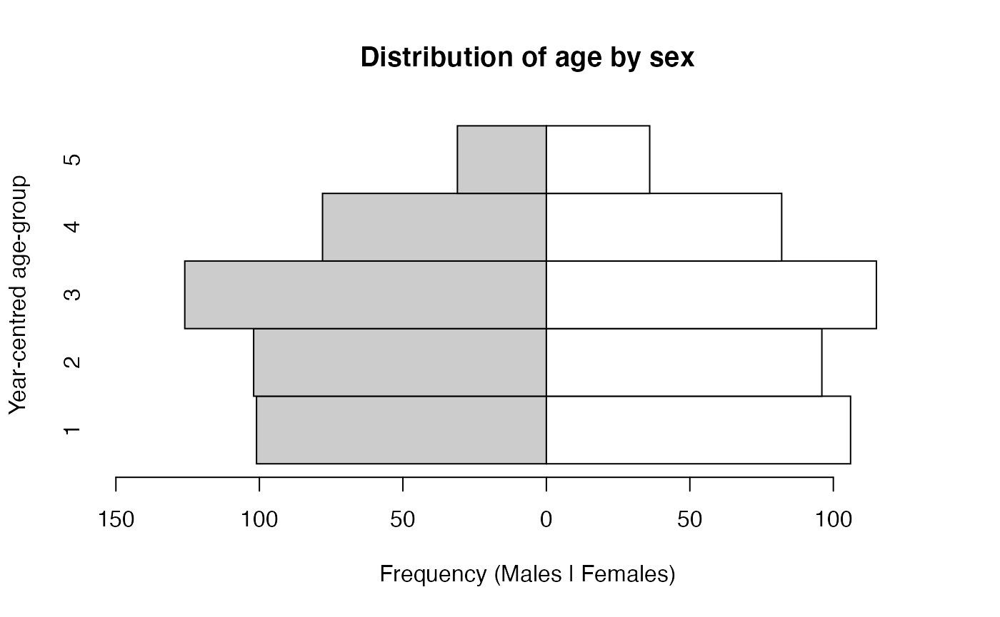
or colours:
pyramid.plot(svy$ycag, svy$sex,
main = "Distribution of age by sex",
xlab = "Frequency (Males | Females)",
ylab = "Year-centred age-group",
col = c("lightblue", "pink"))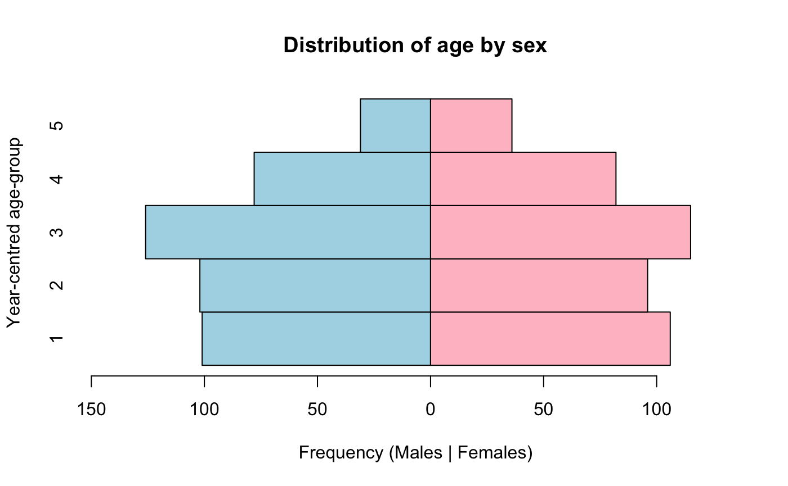
We expect there to be approximately equal numbers of children in the age-groups centred at 1, 2, 3, and 4 years and a smaller number (i.e. about half the number in the other age-groups) in the age-group centred at 5 years. There should also be approximately equal numbers of males and females. This is what we see in the population pyramid below.
pyramid.plot(svy$ycag, svy$sex,
main = "Distribution of age by sex",
xlab = "Frequency (Males | Females)",
ylab = "Year-centred age-group")The pyramid.plot() function uses the values of the
grouped age variable as y-axis value labels.
We can assign descriptive text values using the recode()
function. For example:
svy$ageLabel <- recode(svy$age, "6:29='< 30 months'; 30:hi='30 month or older'")
#> Warning in recode(svy$age, "6:29='< 30 months'; 30:hi='30 month or older'"):
#> NAs introduced by coercion
pyramid.plot(svy$ageLabel,
svy$sex,
main = "Distribution of age by sex",
xlab = "Frequency (Males | Females)",
ylab = "Age-group")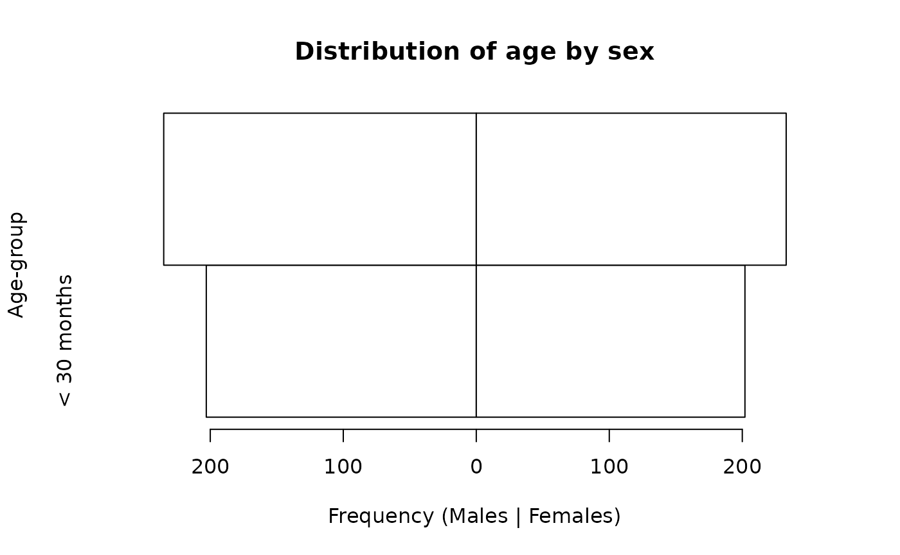
We can also use a factor type variable. This type of variable allows labels to be specified:
svy$ageLabel <- factor(svy$ycag,
labels = c("6:17", "18:29", "30:41", "42:53", "54:59"))
pyramid.plot(svy$ageLabel,
svy$sex,
main = "Distribution of age by sex",
xlab = "Frequency (Males | Females)",
ylab = "Year-centred age-group")The cut() function may also be used:
svy$ageCuts <- cut(svy$age, breaks = c(0, 17, 29, 41, 53, 59))
pyramid.plot(svy$ageCuts,
svy$sex,
main = "Age-group (months) ",
xlab = "Frequency (Males | Females)",
ylab = "Year-centred age-group",
cex.names = 0.9)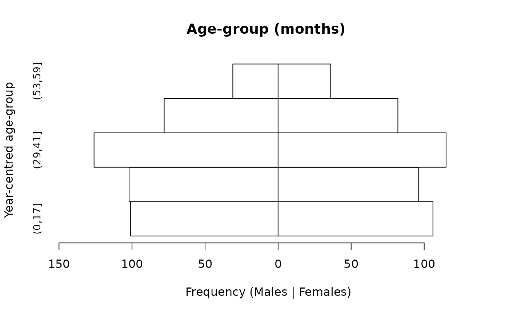
The cut() function is a versatile grouping function. It
is explained in more detail later in this section.
The cex.names parameter of the
pyramid.plot() function allows us to change the size of the
value labels on the y-axis. The value for cex.names is a
magnification factor. Values above one make the labels larger than the
default. Values below one make the labels smaller than the default.
Simple testing
It is possible to perform a formal test on the distribution of age-groups by sex. A simple test is:
chisq.test(table(svy$ycag, svy$sex))This yields:
#>
#> Pearson's Chi-squared test
#>
#> data: table(svy$ycag, svy$sex)
#> X-squared = 1.2675, df = 4, p-value = 0.8669In this example the p-value is not below 0.05 so we accept the null hypothesis that there is no significant association between age and sex. This is an important test as it tests whether the distribution of ages is similar for males and females. It does not, however, test whether the age structure in the sample meets expectations. This requires a test that compares observed numbers with expected numbers derived from an external source (e.g. census data) or from a demographic model.
A model of the expected age structure
A simple model-based method for calculating expected numbers is exponential decay in a population in which births and deaths balance each other and with a 1:1 male to female sex ratio. Under this model the proportion surviving in each group at each year can be calculated as:
\[ p ~ = ~ e ^ {-zt} \]
in which e is the base of the natural logarithm (approximately
2.7183), z is the mortality rate associated with each time period, and t
is time. Time (t) starts at zero for the purposes of computation. Age
can be used as a measure of time since birth. We should use 0 for the
first year-centred age-group, 1 for the second year-centred age-group,
and so-on. This is the rationale for us using t <- 0:4
below.
With five year-centred age-groups and a mortality rate of 1 / 10,000 / day, the expected proportions surviving at each year can be calculated as:
z <- (1 / 10000) * 365.25
t <- 0:4
p <- exp(-z * t)
pThis yields the following survival probabilities:
z <- (1 / 10000) * 365.25
t <- 0:4
p <- exp(-z * t)
p
#> [1] 1.0000000 0.9641340 0.9295544 0.8962149 0.8640713We need to specify the duration (i.e. the number of years) represented by each age-group:
d <- c(1, 1, 1, 1, 0.5)We can then calculate expected proportions of children in each age-group:
ep <- d * p / sum(d * p)
epThis gives:
#> [1] 0.2368580 0.2283628 0.2201724 0.2122757 0.1023311We can now calculate expected numbers:
giving:
#> 1 2 3 4 5
#> 206.77703 199.36076 192.21049 185.31667 89.33505A formal test would compare the observed numbers with the expected numbers. The observed numbers can be found using:
observed <- table(svy$ycag)
observedThis gives:
#>
#> 1 2 3 4 5
#> 207 198 241 160 67It can be useful to examine observed and expected numbers graphically:
par(mfcol = c(1, 2))
barplot(observed, main = "Observed", xlab = "Age group", ylab = "Frequency", ylim = c(0, 250))
barplot(expected, main = "Expected", xlab = "Age group", ylab = "Frequency", ylim = c(0, 250))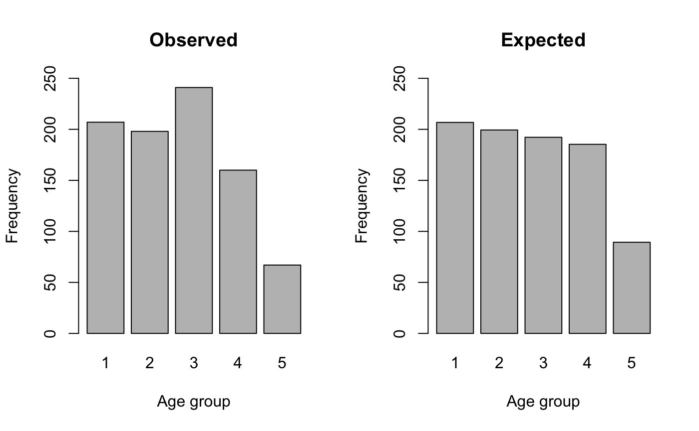
We will calculate a Chi-squared test statistic:
\[ \chi ^ 2 ~ = ~ \sum \frac{(\text{observed} - \text{expected}) ^ 2}{\text{expected}} \]
using:
X2 <- sum((observed - expected) ^ 2 / expected)which yields a Chi-Squared test statistic of:
We can find the p-value using:
pchisq(X2, df = 4, lower.tail = FALSE)This gives:
#> [1] 0.000259395In this example the age distribution is significantly different from expected numbers calculated using a simple demographic model.
Note that we specify the degrees of freedom (df) for the
Chi-Squared test as the number of age-groups minus one. As we have five
age-groups we specify df = 4. The degrees of freedom
(df) that we need to specify will depend on the number of
age-groups that we use. It is always the number of age-groups minus one.
If, for example, there are ten age-groups we would need to specify
df = 9.
The NiPN data quality toolkit provides an R function called
ageChildren() that performs the model- based Chi-Squared
test:
ageChildren(svy$age, u5mr = 1)which returns:
#>
#> Age Test (Children)
#>
#> X-squared = 21.4366, df = 4, p = 0.0003Note that we specified the under five years mortality rate as 1 /
10,000 / day using u5mr = 1. Another, more appropriate,
rate may be specified.
The ageChildren() function calculates year-centred
age-groups for children aged between six and fifty-nine months by
default. This is a standard survey population and is used in SMART and
many other surveys. The use of year-centred age-groups is also standard
practice. The commands that are given above can, however, be adapted for
use with different age-groups.
The output of the ageChildren() function can be saved
for later use:
ac <- ageChildren(svy$age, u5mr = 1)The saved output contains the Chi-squared test results and tables of observed and expected values. These can be accessed using:
ac
#>
#> Age Test (Children)
#>
#> X-squared = 21.4366, df = 4, p = 0.0003
ac$X2
#> [1] 21.43662
ac$df
#> [1] 4
ac$p
#> [1] 0.000259395
ac$observed
#> 1 2 3 4 5
#> 207 198 241 160 67
ac$expected
#> 1 2 3 4 5
#> 206.77703 199.36076 192.21049 185.31667 89.33505The saved results may also be plotted:
plot(ac)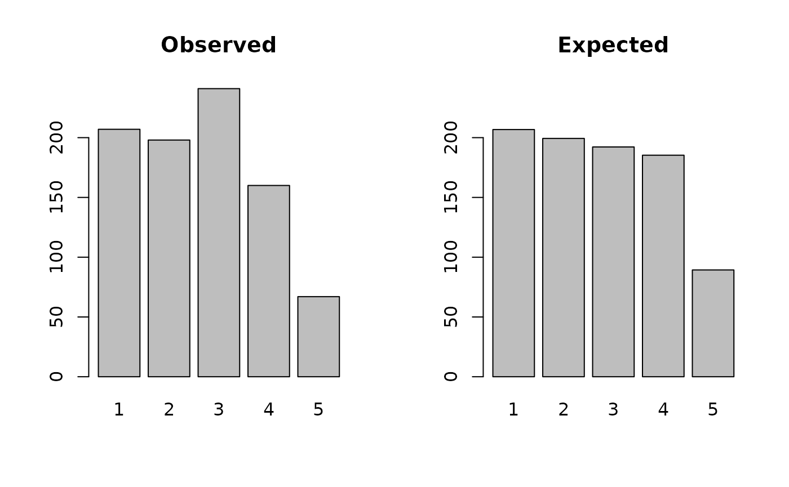
The ageChildren() function can be applied to each sex
separately. To males:
acM <- ageChildren(svy$age[svy$sex == 1], u5mr = 1)
acM
#>
#> Age Test (Children)
#>
#> X-squared = 15.8496, df = 4, p = 0.0032
plot(acM)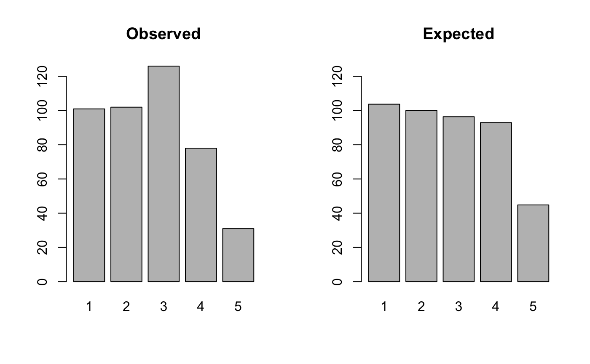
and to females:
acF <- ageChildren(svy$age[svy$sex == 2], u5mr = 1)
acF
#>
#> Age Test (Children)
#>
#> X-squared = 6.8429, df = 4, p = 0.1444
plot(acF)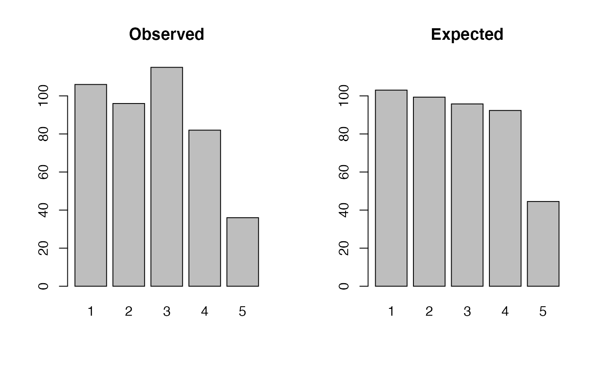
An easier way of doing this is:
by(svy$age, svy$sex, ageChildren, u5mr = 1)
#> svy$sex: 1
#>
#> Age Test (Children)
#>
#> X-squared = 15.8496, df = 4, p = 0.0032
#>
#> ------------------------------------------------------------
#> svy$sex: 2
#>
#> Age Test (Children)
#>
#> X-squared = 6.8429, df = 4, p = 0.1444The test statistics should be interpreted with caution. A significant test result may, for example, be due to the use of an inappropriate model to generate expected numbers.
A significant result in this particular test may be due to:
Specifying an inappropriate under five years mortality rate: This is a particular problem because the specified under five years mortality rate is assumed to have applied for five years prior to data being collected.
The assumption of a 1:1 male to female sex ratio: This is a particular problem in setting in which there is sex-selective abortion and sex-selective infanticide.
The model is crude. Mortality is related to age. Younger children have a greater mortality risk than older children and only an average under five years mortality rate is used. A more sophisticated model could be used but, in many settings, we will not have the data required to use such a model.
It should also be noted that the sample sizes used in most survey can cause tests to yield statistically significant results for small differences between observed and expected numbers.
Use of census data
The use of simple demographic models is far from ideal. It is usually better to calculate the expected proportions from census data. A useful source of census data is the United States Census Bureau’s International Data Base:
https://www.census.gov/data-tools/demo/idb/informationGateway.php
The population in single year age-groups for 0, 1, 2, 3, and 4 years for Afghanistan in 2015 was:
| Age | Both Sexes | Males | Females |
|---|---|---|---|
| 0 | 1148379 | 584276 | 564103 |
| 1 | 1062635 | 539589 | 523046 |
| 2 | 1015688 | 515793 | 499895 |
| 3 | 981288 | 498365 | 482923 |
| 4 | 950875 | 482926 | 467949 |
We can calculate expected values from these data:
With a sample size of \(n = 900\) the expected number in each age-group would be:
expected <- ep * 900
expected
#> [1] 200.3427 185.3841 177.1939 171.1925 165.8868These expected values can be used in a Chi-squared test as is illustrated above.
Census data may also be used to estimate the under five years’
mortality rate (U5MR) which can then be used with the
ageChildren() function.
The model of exponential decay in a population in which births and deaths balance each other with a 1:1 male to female sex ratio:
\[ p ~ = ~ e ^ {-zt} \]
means that we can, given an age-distribution, estimate mortality by fitting the model:
\[ \log_e(n) ~ = ~ \alpha ~ + ~ \beta t \]
where \(n\) is the count of children in each age-group.
The absolute value of the β coefficient is the point estimate of the mortality rate (z). Using the 2015 population data for Afghanistan:
This gives:
#>
#> Call:
#> lm(formula = log(pop) ~ t)
#>
#> Coefficients:
#> (Intercept) t
#> 13.93601 -0.04571The value reported under t is the \(\beta\) coefficient (-0.04571). The absolute value of the \(\beta\) coefficient (i.e. the value without the sign) is 0.04571. This is the point estimate of the mortality rate. Expressed as the number of deaths / 10,000 persons / day:
(0.04571 / 365.25) * 10000this is:
#> [1] 1.251472We can use this estimate with the ageChildren()
function:
ageChildren(svy$age, u5mr = 1.251472)
#>
#> Age Test (Children)
#>
#> X-squared = 20.4744, df = 4, p = 0.0004The age ratio
A much simpler and less problematic age-related test of survey and data quality is the age ratio test.
The age ratio is defined as:
\[ \text{Age ratio} ~ = ~ \frac{\text{number of children aged between 6 and 29 months}}{\text{number of children aged between 30 and 59 months}} \]
We will use the recode() function from NiPN data quality
toolkit to create the relevant age-groups:
svy$ageGroup <- recode(svy$age, "6:29=1; 30:59=2")
head(svy)
#> psu age sex weight height muac oedema ycag ageLabel ageCuts ageGroup
#> 1 1 6 1 7.3 65.0 146 2 1 6:17 (0,17] 1
#> 2 1 42 2 12.5 89.5 156 2 4 42:53 (41,53] 2
#> 3 1 23 1 10.6 78.1 149 2 2 18:29 (17,29] 1
#> 4 1 18 1 12.8 81.5 160 2 2 18:29 (17,29] 1
#> 5 1 52 1 12.1 87.3 152 2 4 42:53 (41,53] 2
#> 6 1 36 2 16.9 93.0 190 2 3 30:41 (29,41] 2The observed age ratio is:
which gives:
#> [1] 0.8653846It is often easier to work with proportions than with ratios so we only need to calculate the proportion in the younger age-group:
which gives:
#> [1] 0.4639175We can calculate an expected value using census data or a simple demographic model. The simplest approach is to use a standard value. SMART surveys often use the ratio 0.85:1.
We only need to calculate the expected proportion in the younger group. For the ratio 0.85:1 this is:
p <- 0.85 / (0.85 + 1) This gives:
#> [1] 0.4594595The observed proportion (0.4639175) and expected proportion (0.4594595) are so similar that a formal test of statistical significance is not required in this case.
Formal testing can be done using a Chi-squared test:
This returns:
#>
#> 1-sample proportions test with continuity correction
#>
#> data: sum(svy$ageGroup == 1) out of sum(table(svy$ageGroup)), null probability 0.4594595
#> X-squared = 0.053062, df = 1, p-value = 0.8178
#> alternative hypothesis: true p is not equal to 0.4594595
#> 95 percent confidence interval:
#> 0.4304994 0.4976573
#> sample estimates:
#> p
#> 0.4639175The age ratio in the example data is not significantly different from the expected age ratio.
The NiPN data quality toolkit provide an R function called
ageRatioTest() that performs the age ratio test:
ageRatioTest(svy$age, ratio = 0.85)This returns:
#>
#> Age Ratio Test (children's data)
#>
#> Expected age ratio = 0.8500
#> Expected proportion aged 6 - 29 months = 0.4595
#>
#> Observed age ratio = 0.8654
#> Observed proportion aged 6 - 29 months = 0.4639
#>
#> X-squared = 0.0531, p = 0.8178The ratio parameter of the ageRatioTest()
function allows you to specify an expected age ratio other than
0.85:1.
Note that the ageRatioTest() function applies the test
to data from children aged between 6 and 59 months only (all other ages
are ignored).
The age ratio test might be applied to data from both sexes (as above) and to each sex separately:
by(svy$age, svy$sex, ageRatioTest, ratio = 0.85)
#> svy$sex: 1
#>
#> Age Ratio Test (children's data)
#>
#> Expected age ratio = 0.8500
#> Expected proportion aged 6 - 29 months = 0.4595
#>
#> Observed age ratio = 0.8638
#> Observed proportion aged 6 - 29 months = 0.4635
#>
#> X-squared = 0.0145, p = 0.9041
#>
#> ------------------------------------------------------------
#> svy$sex: 2
#>
#> Age Ratio Test (children's data)
#>
#> Expected age ratio = 0.8500
#> Expected proportion aged 6 - 29 months = 0.4595
#>
#> Observed age ratio = 0.8670
#> Observed proportion aged 6 - 29 months = 0.4644
#>
#> X-squared = 0.0247, p = 0.8750The example data meets expectations regarding the age ratio for all children and for male and female children separately.
Age and sex distributions : Adults and general population surveys
A key test of survey quality is whether the survey data represents the population in terms of the age and sex distribution. We can test this by comparison with census data.
We will retrieve some example data:
svy <- read.table("as.ex01.csv", header = TRUE, sep = ",")
head(svy)#> age sex
#> 1 44 2
#> 2 1 2
#> 3 15 2
#> 4 7 1
#> 5 14 1
#> 6 14 1These data are taken from household rosters collected as part of a household survey in Tanzania. We will use census data taken from the Wolfram|Alpha knowledge engine:
http://www.wolframalpha.com/input/?i=Tanzania+age+distribution
Another useful source of census data is the United States Census Bureau’s International Data Base:
https://www.census.gov/data-tools/demo/idb/informationGateway.php
The pyramid plot produced by Wolfram|Alpha is shown in the figure below.

The table produced by Wolfram|Alpha was downloaded and stored in a CSV file:
ref <- read.table("as.ex02.csv", header = TRUE, sep = ",")
ref#> age Males Females All
#> 1 [0,5) 4043000 3969000 8012000
#> 2 [5,10) 3336000 3284000 6620000
#> 3 [10,15) 2775000 2742000 5517000
#> 4 [15,20) 2386000 2372000 4758000
#> 5 [20,25) 2076000 2073000 4149000
#> 6 [25,30) 1753000 1750000 3503000
#> 7 [30,35) 1453000 1432000 2885000
#> 8 [35,40) 1142000 1099000 2241000
#> 9 [40,45) 873000 846000 1719000
#> 10 [45,50) 673000 699000 1372000
#> 11 [50,55) 538000 601000 1139000
#> 12 [55,60) 433000 503000 936000
#> 13 [60,65) 357000 426000 783000
#> 14 [65,70) 266000 319000 585000
#> 15 [70,75) 182000 222000 404000
#> 16 [75,80) 108000 137000 245000
#> 17 [80,85) 51000 68000 119000
#> 18 [85,90) 17000 25000 42000
#> 19 [90,95) 3000 6000 9000
#> 20 [95,100) 0 1000 1000The age-groups are expressed using the form specified in ISO 31-11, an international standard that applies to mathematical symbols. The form [a,b) expresses the interval \(a ≤ x < b\). For example, [30,35) is used to indicate the set {30, 31, 32, 33, 34} of ages in years. The form [a,b) is said to be closed on the left and open on the right.
The reference data (ref) uses five-year age-groups. We
will create the same age-groups in the example dataset.
We should first check the range of ages in the example data:
range(svy$age)which returns:
#> [1] 0 93The R language provides a function that makes it easy to create ISO 31-11 groupings from raw data:
svy$ageGroup <-cut(svy$age,
breaks = seq(from = 0, to = 95, by = 5),
include.lowest = TRUE, right = FALSE)Using include.lowest = TRUE tells the cut()
function to include the lowest breaks value (zero in this case). Using
right = FALSE tells the cut() function to use
groupings that are closed on the left. This combination of parameters
creates the same “closed on the left” and “open on the right” age-groups
as are used in the reference (ref) data:
table(svy$ageGroup)
#>
#> [0,5) [5,10) [10,15) [15,20) [20,25) [25,30) [30,35) [35,40) [40,45) [45,50)
#> 1598 1268 1072 808 870 575 580 385 424 258
#> [50,55) [55,60) [60,65) [65,70) [70,75) [75,80) [80,85) [85,90) [90,95]
#> 284 128 165 82 98 51 60 18 12A tabular analysis of age-group by sex can be produced using:
table(svy$ageGroup, svy$sex)
#>
#> 1 2
#> [0,5) 821 777
#> [5,10) 637 631
#> [10,15) 547 525
#> [15,20) 389 419
#> [20,25) 342 528
#> [25,30) 343 232
#> [30,35) 250 330
#> [35,40) 177 208
#> [40,45) 206 218
#> [45,50) 125 133
#> [50,55) 162 122
#> [55,60) 70 58
#> [60,65) 87 78
#> [65,70) 33 49
#> [70,75) 47 51
#> [75,80) 22 29
#> [80,85) 24 36
#> [85,90) 10 8
#> [90,95] 1 11A visual inspection is useful:
pyramid.plot(svy$ageGroup, svy$sex)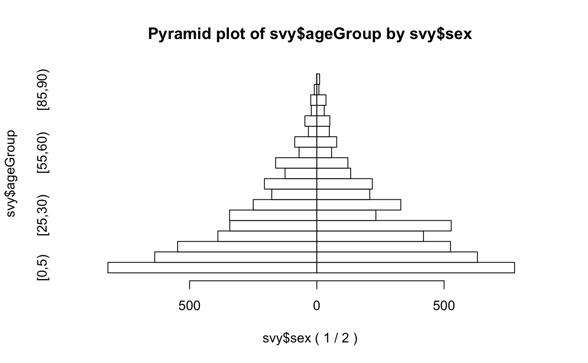
We can make this easier to read:
pyramid.plot(svy$ageGroup,
svy$sex,
main = "Age-group by sex",
xlab = "Number (Males | Females)",
ylab = "",
las = 1,
cex.names = 0.9)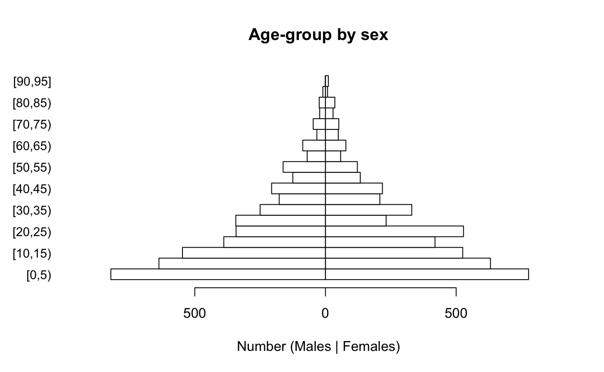
Note that we specified ylab = "" because it is clear
that the category labels represent age-groups and to prevent the y-axis
label from obscuring the category labels, which happens with:
pyramid.plot(svy$ageGroup,
svy$sex,
main = "Age-group by sex",
xlab = "Number (Males | Females)",
ylab = "Age-group",
las = 1,
cex.names = 0.9)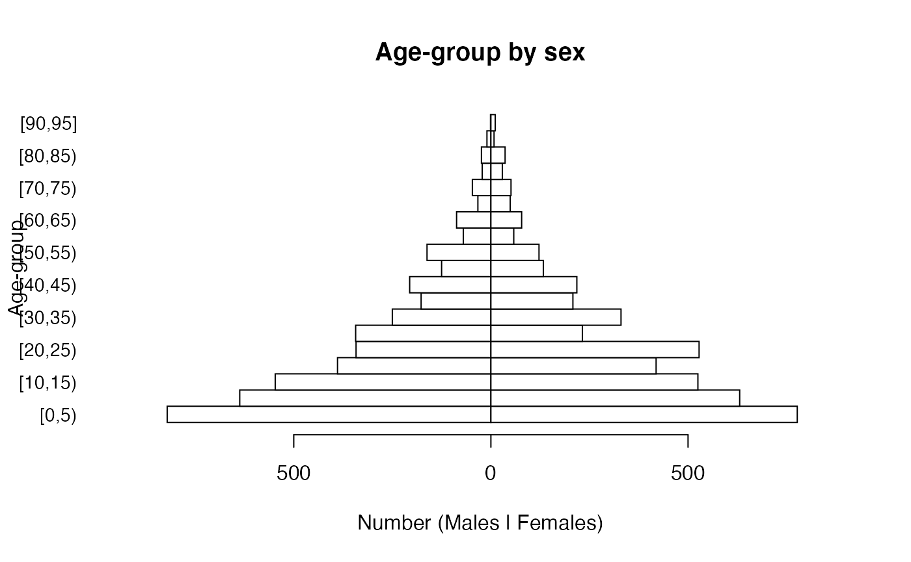
It is possible to alter the number of lines of text in margins of the plot, reduce the size of the age-group labels, and place the y-axis label on a specific line in the left margin of the plot in order to make a clearer plot:
par(mar = c(5, 5, 4, 2))
pyramid.plot(svy$ageGroup,
svy$sex,
main = "Age-group by sex",
xlab = "Number (Males | Females)",
ylab = "",
las = 1,
cex.names = 0.8)
title(ylab = "Age-group", line = 4)The easiest way of checking whether the survey data represents the general population in terms of the age and sex distribution is to compare the observed (figure on right) and expected (figure on left) distributions.
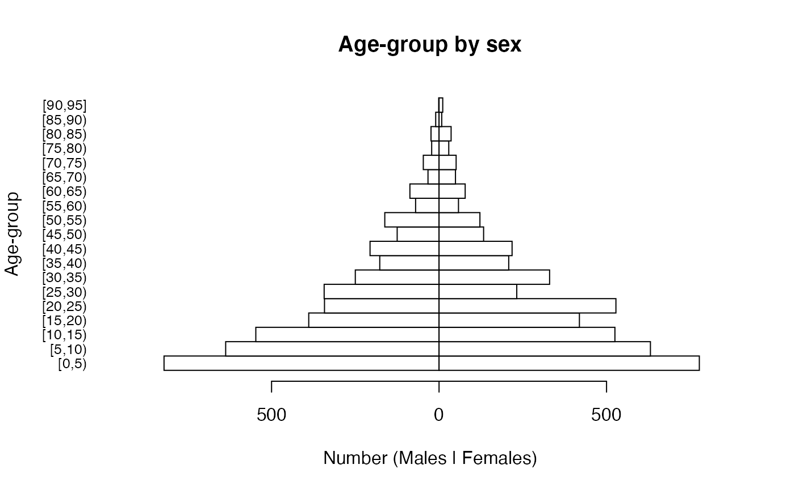
The general shapes of the two distributions are similar. Some of the lumpiness in figure on the right is due to age heaping in the adult ages at decades and half-decades:
ah <- ageHeaping(svy$age, divisor = 10)
plot(ah, main = "Remainder of age / 10")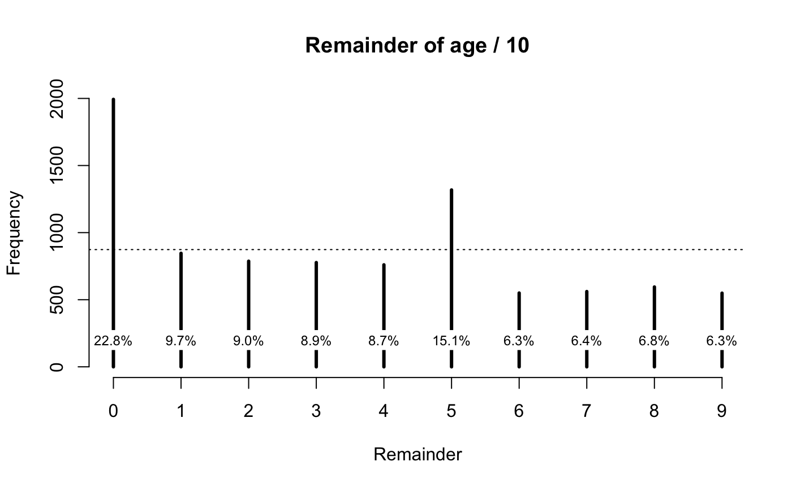
A more formal test of the age structure can be made by comparing observed and expected numbers. We can do this graphically:
ref <- ref[1:19, ]
expectedProportions <- ref$All / sum(ref$All)
expectedNumbers <- expectedProportions * sum(table(svy$ageGroup))
mp <- barplot(table(svy$ageGroup),
main = "Observed and expected numbers",
ylim = c(0, max(expectedNumbers)),
las = 2)
lines(mp, expectedNumbers, lty = 2, lwd = 2)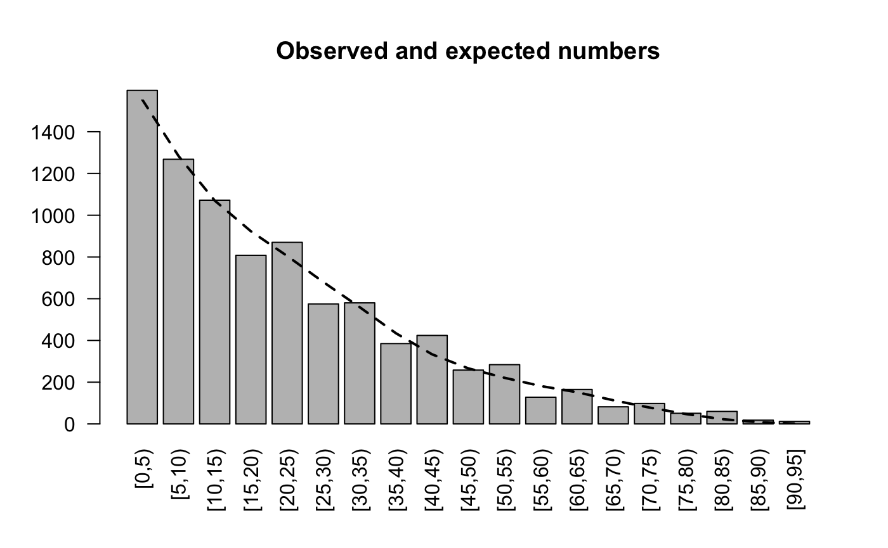
The observed and expected numbers are similar to each other. The lumpiness in the observed numbers is due to age heaping. See Figure ASA04.
Formal testing can be performed:
chisq.test(table(svy$ageGroup),
p = expectedProportions)This gives:
#> Warning in chisq.test(table(svy$ageGroup), p = expectedProportions):
#> Chi-squared approximation may be incorrect
#>
#> Chi-squared test for given probabilities
#>
#> data: table(svy$ageGroup)
#> X-squared = 248.41, df = 18, p-value < 2.2e-16The warning is due to small expected numbers (i.e. n < 5) in the older age-groups. R provides a more robust “Monte Carlo” test:
chisq.test(table(svy$ageGroup),
p = expectedProportions,
simulate.p.value = TRUE)This may take a few seconds to compute and yields:
#>
#> Chi-squared test for given probabilities with simulated p-value (based
#> on 2000 replicates)
#>
#> data: table(svy$ageGroup)
#> X-squared = 248.41, df = NA, p-value = 0.0004998The test results need to be interpreted with caution. The sample size
(\(n = 8736\)) is large in this
example. This means that small differences, which may be due to age
heaping, become statistically significant. This test cannot be
considered to be good evidence that the age-structure of the sample
differs from the expected age-structure of the population. We also need
to examine the sex ratio of the sample. A sex ratio test can be
performed using the sexRatioTest() function from the NiPN
data quality toolkit and the sex ratio observed in the census data:
censusM <- sum(ref$Males)
censusF <- sum(ref$Females)
sexRatioTest(svy$sex,
codes = c(1, 2),
pop = c(censusM, censusF))This yields:
#>
#> Sex Ratio Test
#>
#> Expected proportion male = 0.4988
#> Observed proportion male = 0.4914
#> X-squared = 1.8770, p = 0.1707There is no evidence that the sex ratio in the sample differs much from the expected sex ratio in the population.
The techniques outlined in this section are illustrative. This is because many surveys, other than nutritional anthropometry surveys in young children, are not standardised. A survey may sample only women of child-bearing age. The sample may be restricted to women aged between 15 and 45 years.
In this case the age-structure can be examined using the techniques outlined above but it would make no sense to examine the sex ratio. Care should be taken when examining data from surveys that may have deliberately oversampled specific age-groups.